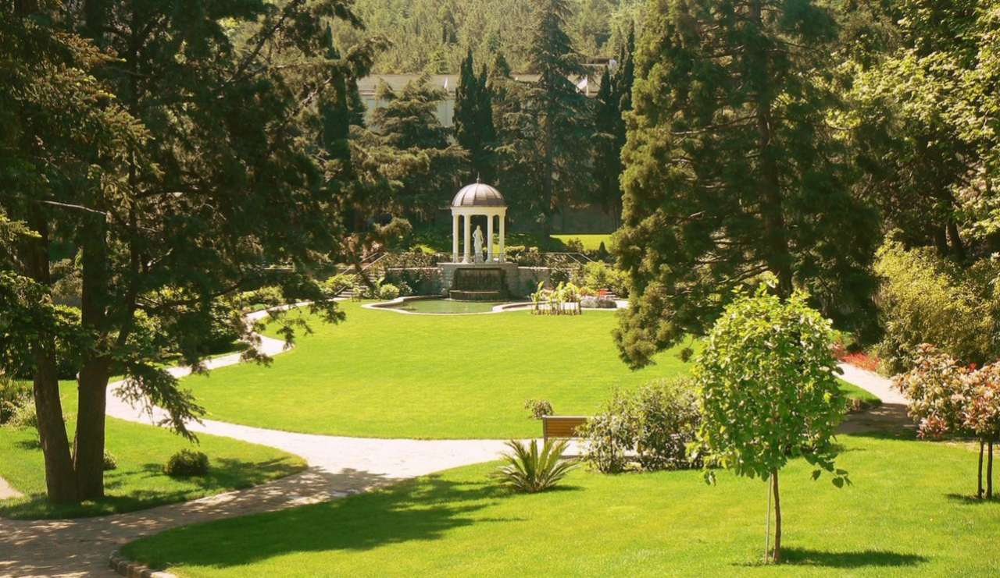
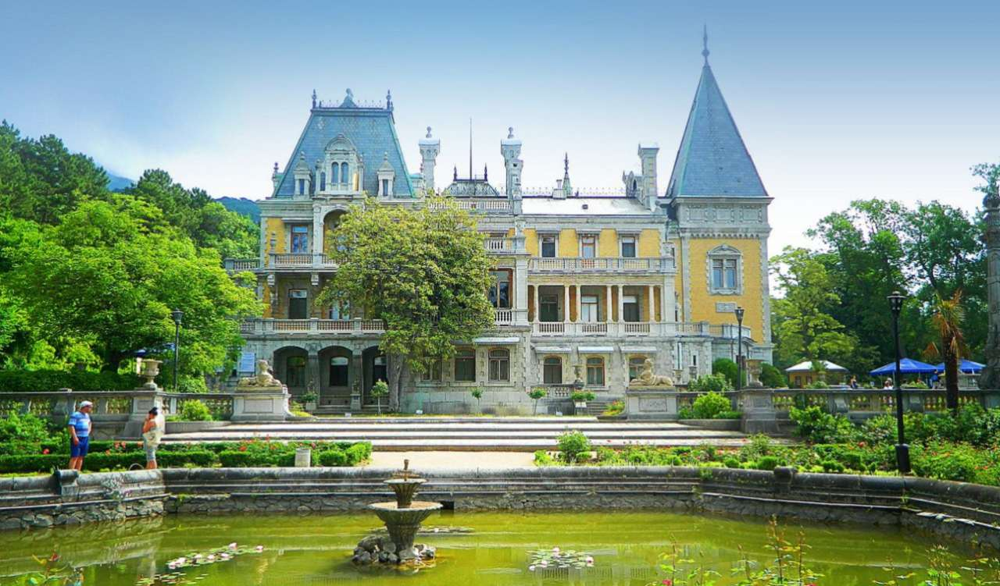
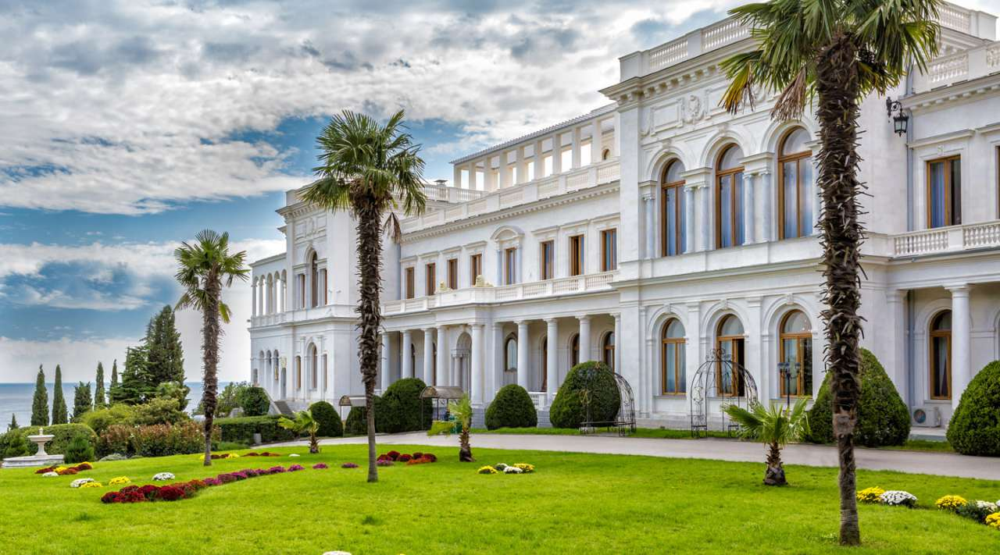
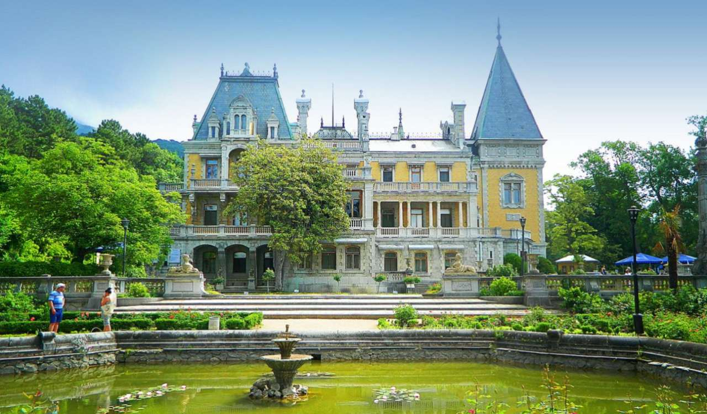
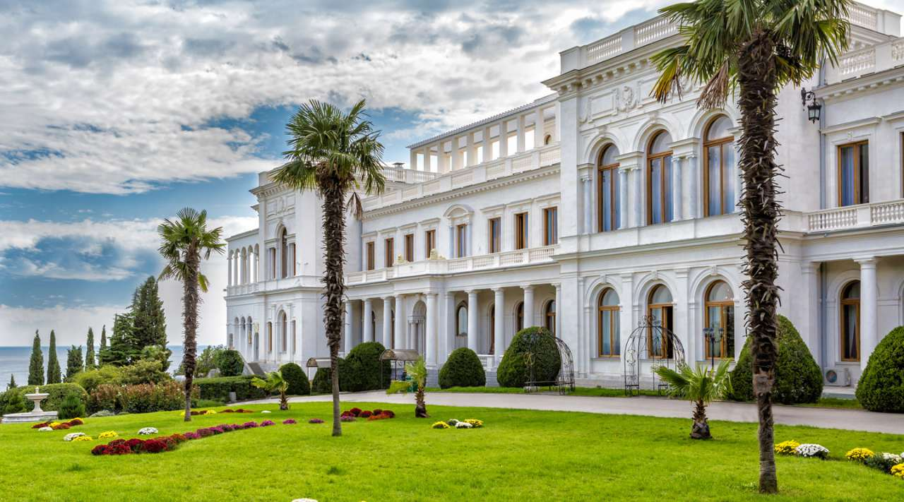
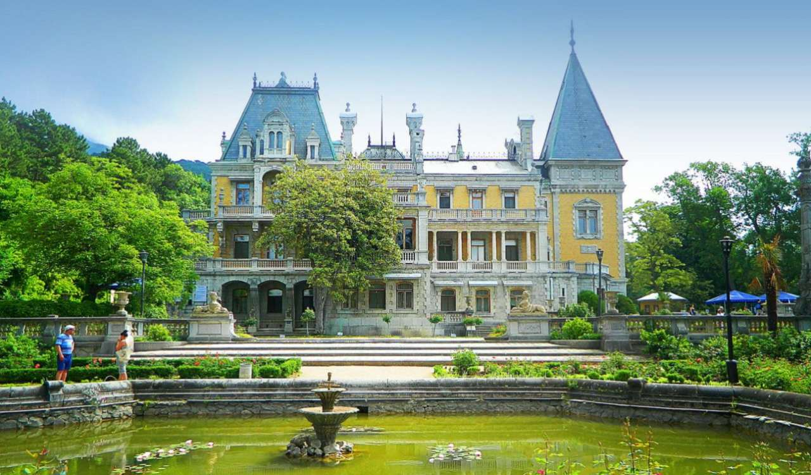
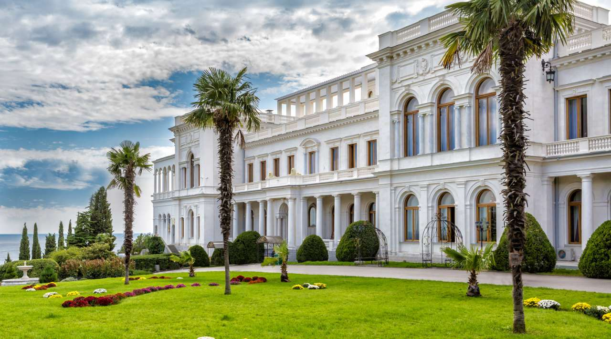

 






Бухта в Балаклаві
Кримське містечко Балаклава прикрашає стародавня бухта, здавна радує око подорожуючих, а також захищає від набігів ворогів. Балаклавська бухта — одна з бухт, розташованих в межах «Великого Севастополя». Неподалік від бухти розташована старовинна фортеця Чембало. Бухта, оточена горами, які закривають містечко від вітру і шторму.